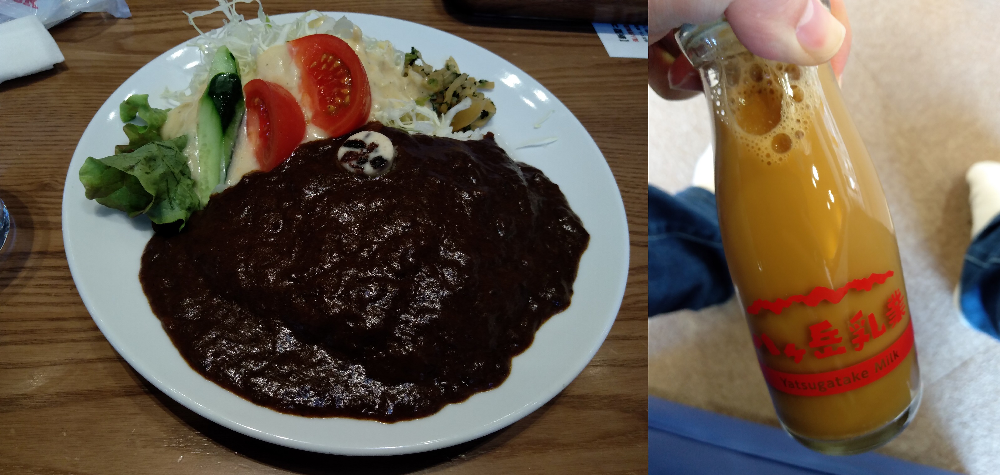
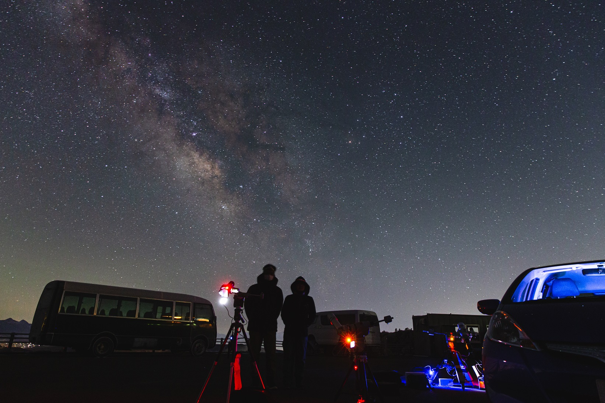
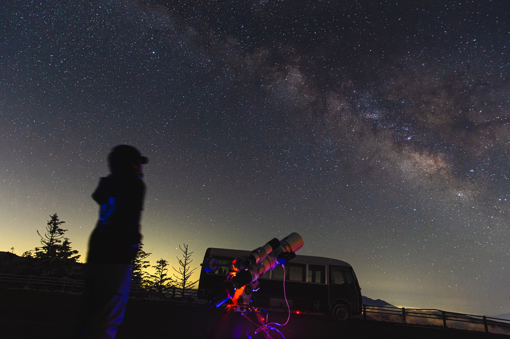
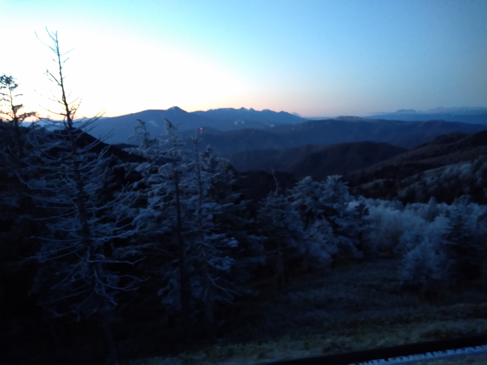
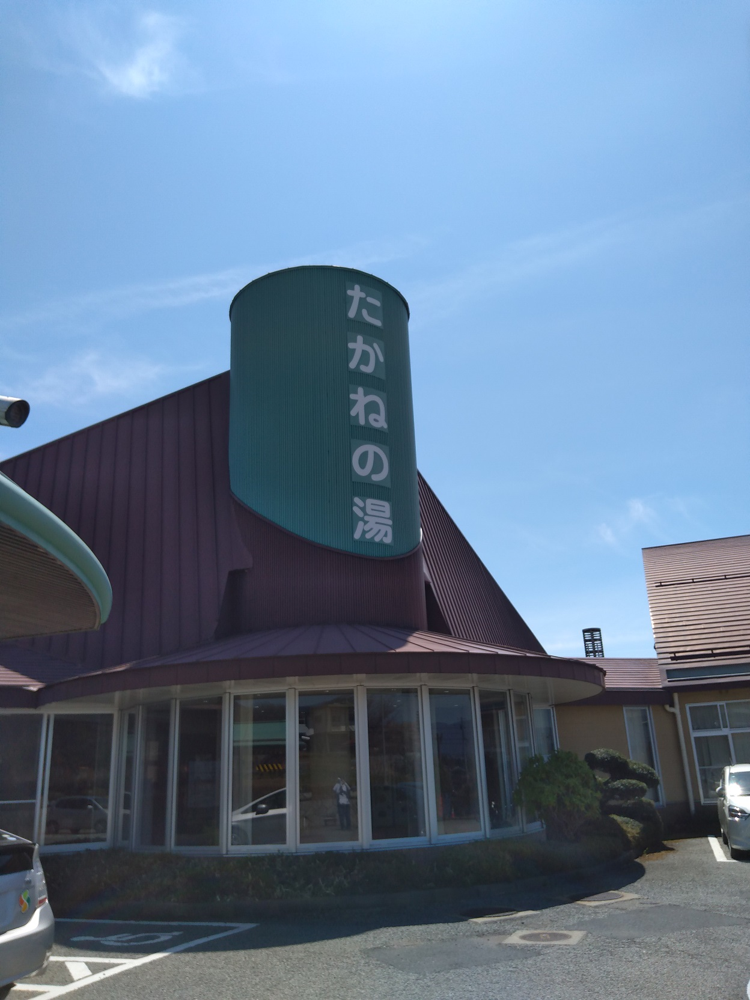
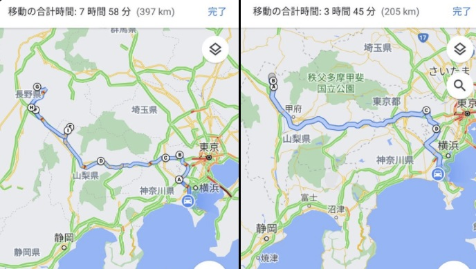

<!DOCTYPE html>
<html>

<head><meta name="generator" content="Hexo 3.8.0">
  <meta charset="utf-8">
  
    <title>
      
        【遠征記】2021年4月 美ヶ原 | 
            ほしよみ大学生のブログ
    </title>
    <meta name="viewport" content="width=device-width">
    <meta name="description" content="あいさつ前回の記事と時間が前後してしまいますが，4月に星仲間を連れて美ヶ原まで行ってきた話を少し書いておきます．">
<meta name="keywords" content="写真,天体写真,遠征記,赤道儀">
<meta property="og:type" content="article">
<meta property="og:title" content="【遠征記】2021年4月 美ヶ原">
<meta property="og:url" content="http://dabokun.github.io/2021/06/07/00000053-2021-04-utsukushi/index.html">
<meta property="og:site_name" content="ほしよみ大学生のブログ">
<meta property="og:description" content="あいさつ前回の記事と時間が前後してしまいますが，4月に星仲間を連れて美ヶ原まで行ってきた話を少し書いておきます．">
<meta property="og:locale" content="ja">
<meta property="og:image" content="http://dabokun.github.io/2021/06/07/00000053-2021-04-utsukushi/card.jpg">
<meta property="og:updated_time" content="2021-06-07T17:18:56.921Z">
<meta name="twitter:card" content="summary_large_image">
<meta name="twitter:title" content="【遠征記】2021年4月 美ヶ原">
<meta name="twitter:description" content="あいさつ前回の記事と時間が前後してしまいますが，4月に星仲間を連れて美ヶ原まで行ってきた話を少し書いておきます．">
<meta name="twitter:image" content="http://dabokun.github.io/2021/06/07/00000053-2021-04-utsukushi/card.jpg">
<meta name="twitter:creator" content="@dabo_pic">
      
        <link rel="alternative" href="/atom.xml" title="ほしよみ大学生のブログ" type="application/atom+xml">
        
          
            <link rel="icon" href="/images/favicon.png">
            
              <link rel="stylesheet" href="/css/style.css">
                <!--[if lt IE 9]><script src="//html5shiv.googlecode.com/svn/trunk/html5.js"></script><![endif]-->
                
                  <script data-ad-client="ca-pub-1350688970555904" async src="https://pagead2.googlesyndication.com/pagead/js/adsbygoogle.js"></script>
</head></html>
<body>
  <div id="container">
    <div class="mobile-nav-panel">
	<i class="icon-reorder icon-large"></i>
</div>
<header id="header">
	<h1 class="blog-title">
		<a href="/">ほしよみ大学生のブログ</a>
	</h1>
	<nav class="nav">
		<ul>
			<li><a href="/">Home</a></li><li><a href="/categories">Categories</a></li><li><a href="/tags">Tags</a></li><li><a href="/archives">Archives</a></li><li><a href="/about">About</a></li><li><a href="/work">Work</a></li>
			<li><a id="nav-search-btn" class="nav-icon" title="Search"></a></li>
			<li><a href="https://github.com/dabokun"></a>
			</li>
			<li><a href="https://twitter.com/dabo_pic"></a></li>
			<li><a href="/atom.xml" id="nav-rss-link" class="nav-icon" title="RSS Feed"></a>
			</li>
		</ul>
	</nav>
	<div id="search-form-wrap">
		<form action="//google.com/search" method="get" accept-charset="UTF-8" class="search-form"><input type="search" name="q" class="search-form-input" placeholder="Search"><button type="submit" class="search-form-submit">&#xF002;</button><input type="hidden" name="sitesearch" value="http://dabokun.github.io"></form>
	</div>
</header>
    <div id="main">
      <article id="post-00000053-2021-04-utsukushi" class="post">
	<footer class="entry-meta-header">
		<span class="meta-elements date">
			<a href="/2021/06/07/00000053-2021-04-utsukushi/" class="article-date">
  <time datetime="2021-06-07T12:30:38.000Z" itemprop="datePublished">2021-06-07</time>
</a>
		</span>
		<span class="meta-elements author">astr0dab0</span>
		<div class="commentscount">
			
			<a href="http://dabokun.github.io/2021/06/07/00000053-2021-04-utsukushi/#disqus_thread" class="article-comment-link">Comments</a>
			
		</div>
	</footer>
	
	<header class="entry-header">
		
  
    <h1 class="article-title entry-title" itemprop="name">
      【遠征記】2021年4月 美ヶ原
    </h1>
  

	</header>
	<div class="entry-content">
		
		
		<div id="toc" class="toc-article">
			<p class="toc-title">目次</p>
			<ol class="toc"><li class="toc-item toc-level-3"><a class="toc-link" href="#あいさつ"><span class="toc-number">1.</span> <span class="toc-text">あいさつ</span></a></li><li class="toc-item toc-level-3"><a class="toc-link" href="#美ヶ原へ"><span class="toc-number">2.</span> <span class="toc-text">美ヶ原へ</span></a></li></ol>
		</div>
		
		<h3 id="あいさつ"><a href="#あいさつ" class="headerlink" title="あいさつ"></a>あいさつ</h3><p>前回の記事と時間が前後してしまいますが，4月に星仲間を連れて美ヶ原まで行ってきた話を少し書いておきます．</p>
<a id="more"></a>
<h3 id="美ヶ原へ"><a href="#美ヶ原へ" class="headerlink" title="美ヶ原へ"></a>美ヶ原へ</h3><p>天気予報は正直微妙で，夜になってから晴れるかどうかという雰囲気でした．お昼頃という早めの時間に出発し，星仲間を都内で拾います．彼はなんとEM-200の中古を購入したそうで，そのテストをするらしく，羨ましいことこの上なし．時間はあったので，下道でのんびり甲州街道を勝沼まで走り，勝沼からは高速を使いました．<br>途中ずっと行きたかった萌木の村でカレーを食べ，「次はベーコン乗せて食べたいなあ」などと思いつつ片倉館で湯船に浸かりました．片倉館は閉館ギリギリで，上がるころには受付が閉まっており，風呂上がりのコーヒー牛乳が買えないのでは！？という憂き目にあいましたが，ちょうど締めの作業をしていたっぽい関係者の方がその場で購入させてくれました．ありがたい．</p>
<p></p>
<p>美ヶ原には21時に到着．ビーナスラインが冬季封鎖だったため，岡谷方面から142号→178号と回り道する必要があります．山道直前にコンビニがあるのはありがたいですが，片道600円程度の有料道を走るので注意が必要です．このあと5月に群馬県経由で美ヶ原に行くことになるのですが，その時は有料道は使用しないことになります．<br>山道ではそこそこ晴れているように見えましたが，着いてみると霧の真っ只中…．ふる里館も改修工事中で人もいるようには見えず，なかなかに怖い状況（実際には管理人の方はいらっしゃるようでした）．ふる里館から歩いて10分くらいのところにある山本小屋は営業していましたが，ロビーには人っ子一人いませんでした．晴れるのをじっと待っていると，細かい氷の粒が舞ってパラパラと窓に当たる音が聞こえます．おいおい，ノーマルだし後輪はけっこうすり減ってるんだけどなあ，朝は大丈夫だろうか，と思いつつ，積もりはしなさそうだったので諦めて駐車場に留まっていると，夜半すぎ，不意に晴れてきました．</p>
<p>不思議なことに，晴れるのにかかった時間は本当に一瞬に感じられました．標高が低いところも見渡せるところから眺めても，霧が下に滞留している様子もなく，一体どこに霧消してしまったのやら，狐につままれたような気分です．<br>急いで機材を組み立て，露光開始．ついでに星空記念写真も撮影．</p>
<p></p>
<p>青い馬頭を撮っていましたが，このときはまだMGENを正しく使えていなかったのと，寒さと眠さで頭が半分しか動いていなかったというのもあり，当時でいう「謎の追尾エラー」が発生し特に直焦の成果はありませんでした．<br>まあ天の川中心部見えたから良し！<br><a href="/2021/03/25/00000049-super-wide-bino-live/">こちらの記事</a>で主にライブ鑑賞用途として紹介してしまっていたスーパーワイドビノで始めて本格的な星空のもと色々と眺めてみましたが，天の川中心付近のスタークラウドやM8あたりは全く問題なく見え，一段天の川がこちらに近づいたかのような錯覚を覚えました．また天頂付近に近づいていた夏の天の川の星の粒子感もたまらないものがあります．北アメリカ星雲もメキシコ湾と星雲の間の輝度差は逸らし目ではっきりと確認できました．また夏にじっくり使ってみたいと思います．</p>
<p></p>
<p>朝に撤収し，星仲間が持ってきたジェットボイルでカップ麺を食べ，8時頃まで爆睡．<br>明け方には木々には霜が降りて冬景色が広がり，夜の寒さを物語っていました．たぶん-10℃くらいはいってたと思います．</p>
<p>ピンボケしてますけど…</p>
<p>その後は起きてのんびり北杜市まで戻り，中村農場で親子丼を食べ，たかねの湯という温泉に浸かり，仲間を都内まで送ってから帰宅しました．<br>朝九時にお店に到着するという…整理券番号は一番でした．</p>
<p>南清里はちょうど鯉のぼりシーズンでした．ここまで大規模な鯉のぼりあげは初めて見たので圧巻．</p>
<p>たかねの湯，これまで見逃していた良スポットでした．清里の帰りなどに寄れます．</p>
<p>総運転距離600km．二日間で運転した記録としては最長を更新しました．</p>
<p></p>
<p>観光メインな遠征になってしまいましたが，一緒に行く仲間がいればやはり楽しいってもんです．肉体的疲労はありましたが，600kmも苦ではありませんでした．<br>5月にも遠征できたのでまた別記事で．</p>
<p>それでは．</p>

		
	</div>
	<footer class="article-footer">
		<a href="https://twitter.com/intent/tweet?text=%E3%80%90%E9%81%A0%E5%BE%81%E8%A8%98%E3%80%912021%E5%B9%B44%E6%9C%88%20%E7%BE%8E%E3%83%B6%E5%8E%9F｜%E3%81%BB%E3%81%97%E3%82%88%E3%81%BF%E5%A4%A7%E5%AD%A6%E7%94%9F%E3%81%AE%E3%83%96%E3%83%AD%E3%82%B0&url=http://dabokun.github.io/2021/06/07/00000053-2021-04-utsukushi/" class="twitter-share-button" target="_blank" title="Twitter"></a>
		<script async src="https://platform.twitter.com/widgets.js" charset="utf-8"></script>

		<div id="fb-root"></div>
		<script async defer crossorigin="anonymous" src="https://connect.facebook.net/ja_JP/sdk.js#xfbml=1&version=v4.0"></script>
		<div class="fb-share-button" data-href="http://dabokun.github.io/2021/06/07/00000053-2021-04-utsukushi/" data-layout="button_count" data-size="small"><a target="_blank" href="https://www.facebook.com/sharer/sharer.php?u=https%3A%2F%2Fdabokun.github.io%2F&amp;src=sdkpreparse" class="fb-xfbml-parse-ignore">シェア</a></div>
	</footer>
	<footer class="entry-footer">
		<div class="entry-meta-footer">
			<span class="category">
				
  <div class="article-category">
    <a class="article-category-link" href="/categories/expedition/">遠征記</a>
  </div>

			</span>
			<span class=" tags">
				
  <ul class="article-tag-list"><li class="article-tag-list-item"><a class="article-tag-list-link" href="/tags/photography/">写真</a></li><li class="article-tag-list-item"><a class="article-tag-list-link" href="/tags/astrophotography/">天体写真</a></li><li class="article-tag-list-item"><a class="article-tag-list-link" href="/tags/mount/">赤道儀</a></li><li class="article-tag-list-item"><a class="article-tag-list-link" href="/tags/expedition/">遠征記</a></li></ul>

			</span>
		</div>
	</footer>
	
	
<nav id="article-nav">
  
    <a href="/2021/06/11/00000054-2021-05-utsukushi/" id="article-nav-newer" class="article-nav-link-wrap">
      <strong class="article-nav-caption">Newer</strong>
      <div class="article-nav-title">
        
          【遠征記】2021年5月 美ヶ原
        
      </div>
    </a>
  
  
    <a href="/2021/04/25/00000051-mgen-3-resolved/" id="article-nav-older" class="article-nav-link-wrap">
      <strong class="article-nav-caption">Older</strong>
      <div class="article-nav-title">
        
          MGEN-3 でのガイドについて
        
      </div>
    </a>
  
</nav>

	
</article>


<section id="comments">
	<div id="disqus_thread">
		<noscript>Please enable JavaScript to view the <a href="//disqus.com/?ref_noscript">comments powered by
				Disqus.</a></noscript>
	</div>
</section>

    </div>
    <div class="mb-search">
  <form action="//google.com/search" method="get" accept-charset="utf-8">
    <input type="search" name="q" results="0" placeholder="Search">
    <input type="hidden" name="q" value="site:dabokun.github.io">
  </form>
</div>
<footer id="footer">
	<h1 class="footer-blog-title">
		<a href="/">ほしよみ大学生のブログ</a>
	</h1>
	<span class="copyright">
		&copy; 2022 astr0dab0<br>
		Modify from <a href="http://sanographix.github.io/tumblr/apollo/" target="_blank">Apollo</a> theme, designed by <a href="http://www.sanographix.net/" target="_blank">SANOGRAPHIX.NET</a><br>
		Powered by <a href="http://hexo.io/" target="_blank">Hexo</a>
	</span>
</footer>
    
<script>
  var disqus_shortname = 'astr0dab0';
  
  var disqus_url = 'http://dabokun.github.io/2021/06/07/00000053-2021-04-utsukushi/';
  
  (function(){
    var dsq = document.createElement('script');
    dsq.type = 'text/javascript';
    dsq.async = true;
    dsq.src = '//go.disqus.com/embed.js';
    (document.getElementsByTagName('head')[0] || document.getElementsByTagName('body')[0]).appendChild(dsq);
  })();
</script>


<script src="//ajax.googleapis.com/ajax/libs/jquery/2.0.3/jquery.min.js"></script>


<link rel="stylesheet" href="/fancybox/jquery.fancybox.css" media="screen" type="text/css">
<script src="/fancybox/jquery.fancybox.pack.js"></script>


<script src="/js/script.js"></script>
  </div>
</body>
</html>